Instruction
Buttons, Menus, Screens
At the top, from the left you have three buttons:
- Sort: sort books by title or author name
- Cartegory: show books by the source
- Menu: sleep timer, manual, settings, ...
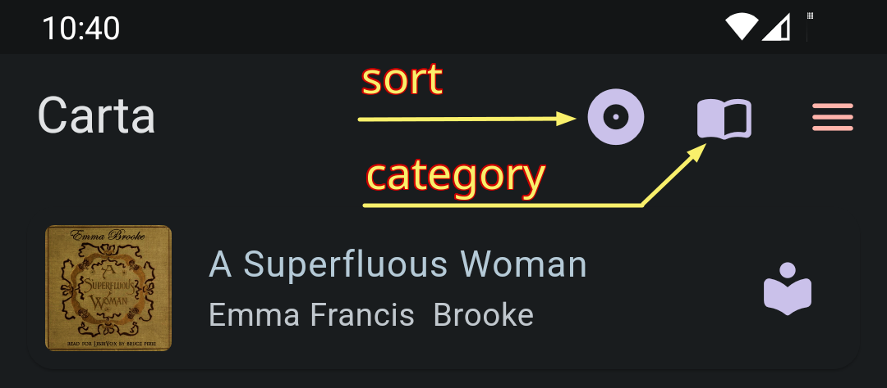
At bottom, you have
- Add audiobook button
- Audio player (tab to expand)
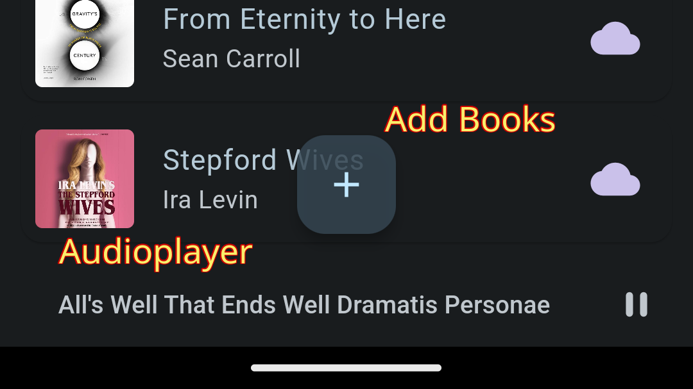
On each book title, there is a book info button at the right end. The shape of the icon indicates the source of the book.
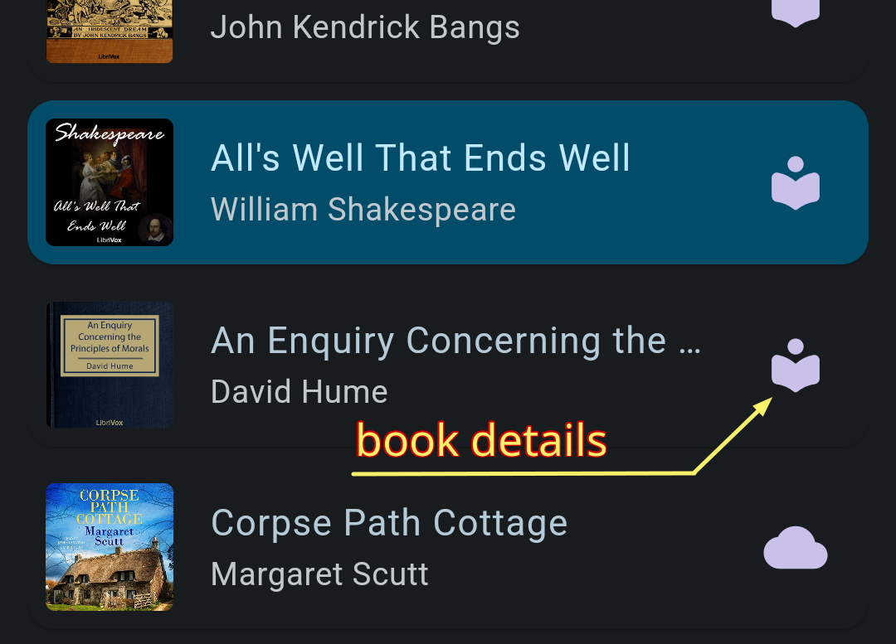
There you can find detailed information about the book. You can edit some items including cover image URL, book text URL, and book description. You can also delete the book here.
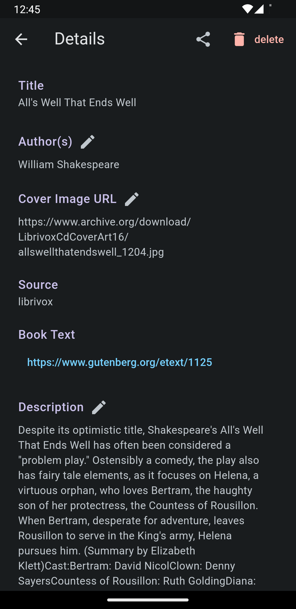
Add Audiobooks
Tap the + button at the bottom and select a book source
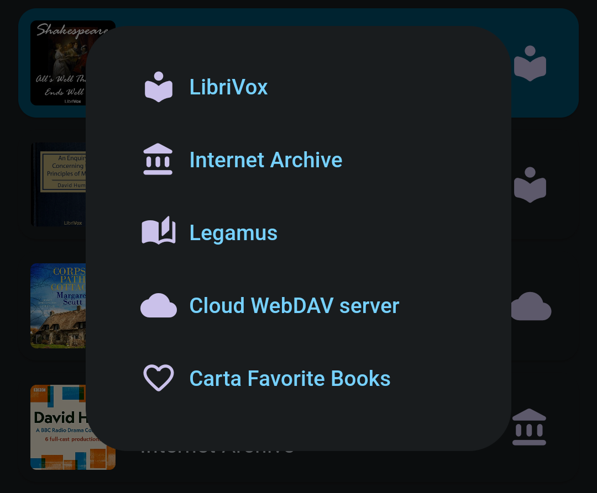
LibroVox, Internet Archive, Legamus
You can navigate these sites using the internal browser. You can also use the menu at the top right corner for some popular choices.
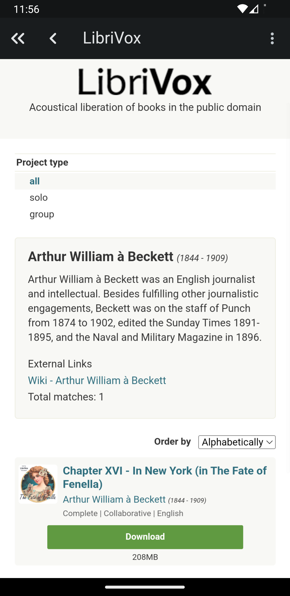
Once, you get to the book page you want, you will see Add to my bookself button poped up at the bottom
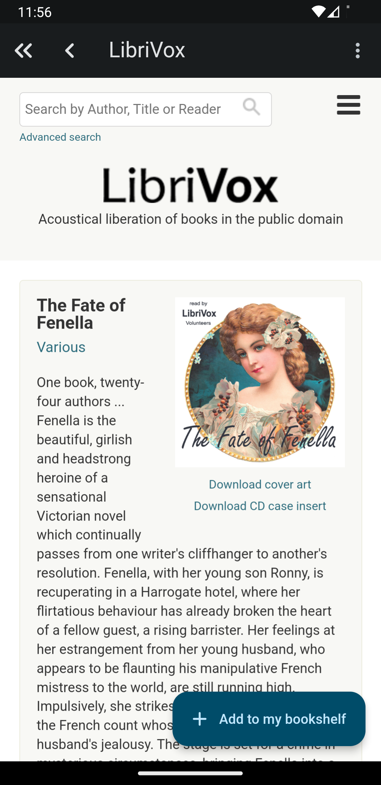
Cloud WebDAV Server
If you choose Cloud WebDAV Server, you will be brought to the Settings page where you can register your WebDAV server
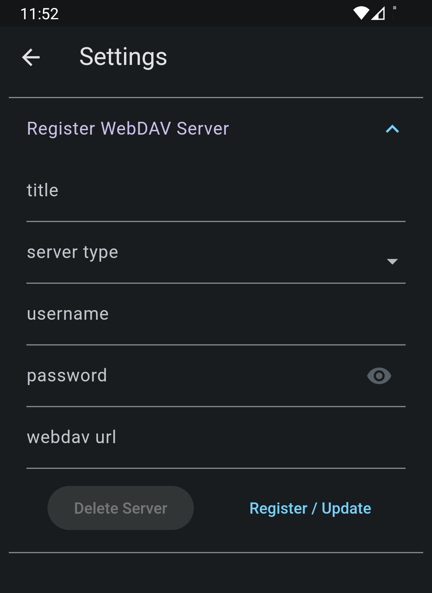
Nextcloud sample
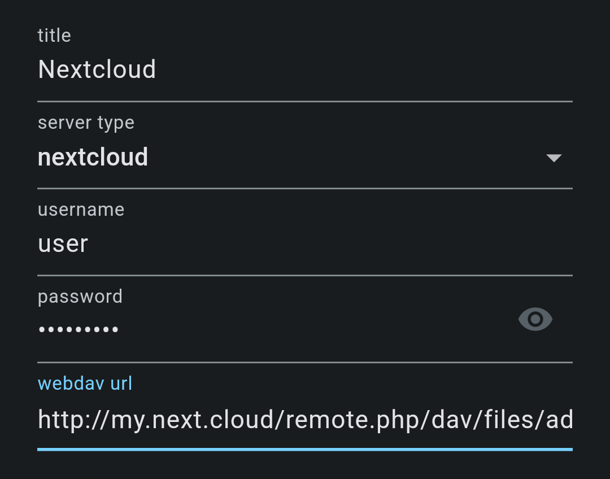
Nextcloud has unique url for the WebDAV access. Go to your nextcloud console and check Files > Files settings > WebDAV. Also visit this page for further information.
Koofr Cloud Sample
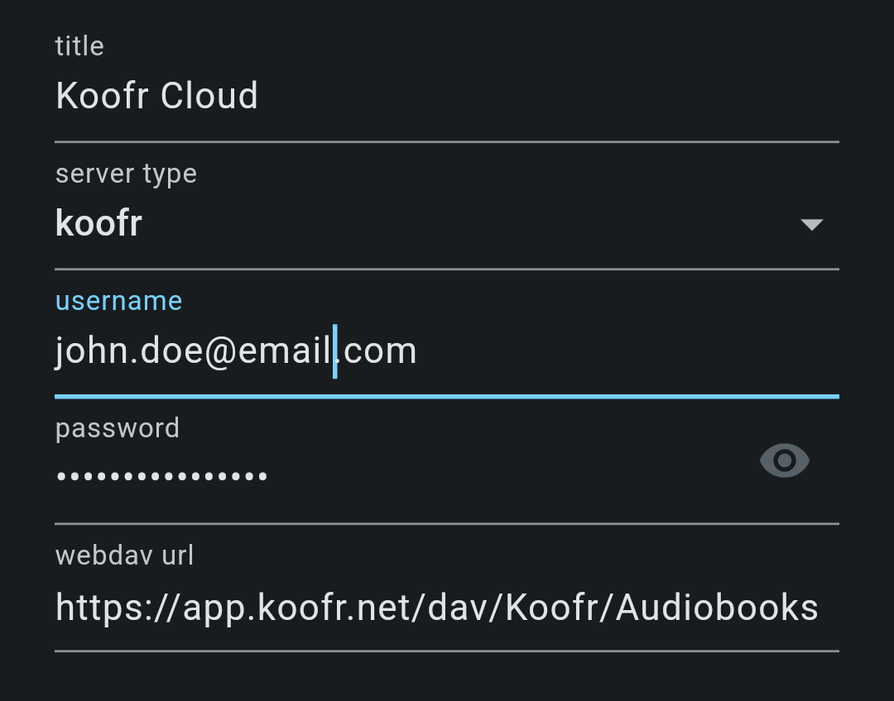
In case of Koofr cloud, first you need to generate a new password for the app then use enter it here. Go to your Koofr page and proceed to Account > Preferences > Password page, there you can generate a password for each app so that you don't have to expose your main account password.
Other Types of WebDAV Servers
This app has been tested with Apache mod_dav and rclone serve. However it should work with other types of WebDAV servers too.
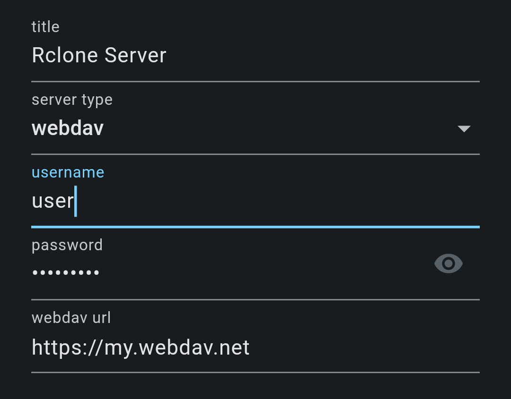
In this case, actual url depends on the configuration of the server.
After setting up servers, you can access them through the + menu.
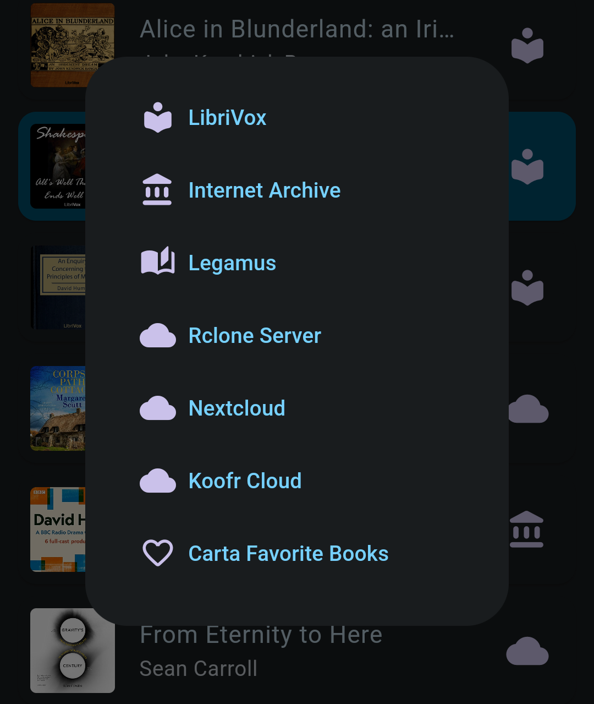
Set Up a WebDAV Server
If you are new to WebDAV, visit this page for easy setup
On Tablets and Chromebooks
On wide screen devices, app shows book list on the left, book details on the right by default.

You can switch between split view and book details only view using the button at the top left corner. Book details only view is useful when you read the book text.
Access Book Text
In the book details page find Text URL and tap it

In most cases, it will lead you to the Gutenberg Project site. Find Read this book online link there.

You will be able to read the text while listening to the audio
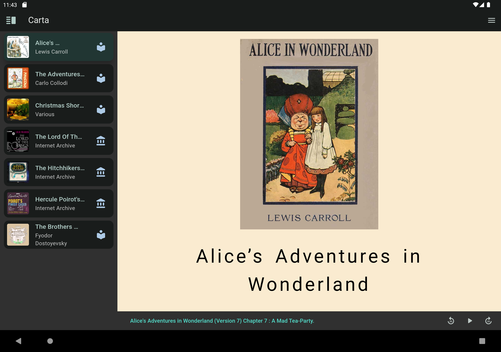
Note that
- Most smartphones are too small to read text
- Materials from Internet Archive have no text
- Some audio books from LibriVox have no text